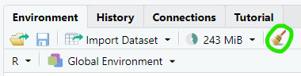
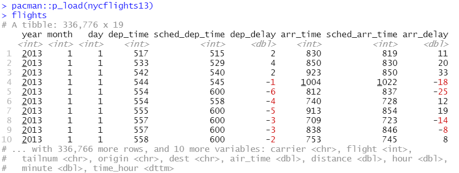

R
R es un lenguaje de programación orientado a la estadística.
Recursos
- Ejercicios en clase: gasolineras, primer ejercicio de clase, examen parcial, último ejercicio de clase
- "Cheat sheets": en el menú de RStudio,
Help -> Cheat Sheets - Documentación del tidyverse
- Libros: R for Data Science, Advanced R
Introducción
Variables
Asignamos variables con x <- 3 (atajo en RStudio: Alt + -). Los nombres de variables y funciones se suelen escribir en minúsculas separadas por barras bajas. Las mayúsculas y minúsculas se consideran letras diferentes.
Los tipos más usados son:
-
character: a pesar del nombre, pueden tener varias letras -
enteros (
integer), punto flotante (double) -
logical:TRUEoFALSE -
list: listas (list(1, 2, 3)) o diccionarios (list(a=1, b=2)) -
vectores (similares a las listas, pero sólo contienen valores de un tipo):
c(1, 2, 3);1:5 -
raw: datos en formato binario -
datepara fechas,dttm(datetime) para fechas con día y hora
Los missing values aparecen representados como NA. La función typeof muestra el tipo de una variable. Para cambiar de tipo usar as.integer, as.tibble, etc.
Para acceder a valores en una lista o vector, usar corchetes: vector[3], lista[2], diccionario["a"]. Al contrario que en Python, los índices empiezan en 1.
RStudio
Ctrl + Intro ejecuta la línea actual, y Ctrl + Shift + S ejecuta el script entero. Ctrl + Shift + R añade una sección nueva.
RStudio conserva el estado del programa y los paquetes instalados al cerrarlo y volverlo a abrir. El icono de la escoba en el panel Environment borra los objetos en el entorno.

Para reiniciar por completo el entorno (borrar los objetos y eliminar los paquetes instalados), Ctrl + Shift + F10.
R busca archivos en el "working directory", que podemos cambiar con las opciones en el panel Files:

Pipes
El operador pipe (%>%, atajo en RStudio: Ctrl + Shift + M) pasa la variable a su izquierda como el primer argumento para la función a su derecha: x %>% f(y, z) equivale a f(x, y, z). Lo usaremos para encadenar funciones sin tener que almacenar los resultados intermedios en variables.
Funciones
suma <- function(x,y){x+y}
Bucles
for(url in url_vector) {
res <- GET(url) %>% headers()
peso <- peso + as.numeric(res_$`content-length`)
}
Condicionales
mutate(flights, distancia = ifelse(distance > 5000, "largo", "corto"))
mutate(ccaa=case_when(idccaa=="01" ~ "Andalucía", idccaa=="02" ~ "Aragón"))
Ejemplos
En los ejemplos voy a usar el dataset flights, que se instala con pacman::p_load(nycflights13).

Tibbles
Las tibbles son un formato de tablas usado en todo el tidyverse. Se pueden crear manualmente: tibble(x=1:10, y=2*x, z= 5), pero normalmente las obtendremos a partir de un dataset.
Para seleccionar una columna de la tibble usar el símbolo $: flights$carrier, o bien flights[[carrier]]. Si queremos varias columnas podemos usar dplyr::select(flights, dep_delay, arr_delay), que devuelve otra tibble con sólo las columnas elegidas.
glimpse() imprime un resumen del contenido de la tibble.
Las funciones del tidyverse usan tibbles, pero otras funciones de R siguen usando dataframes; las podemos convertir a tibbles con as_tibble(df).
Instalación de paquetes
Para ahorrarse líos utilizar el paquete pacman:
packages.install("pacman") # Instalar pacman, sólo hay que hacerlo una vez
pacman::p_load(tidyverse, leaflet, janitor, httr, jsonlite, xml2)
Core tidyverse
El "núcleo" de tidyverse son estos ocho paquetes (en negrita los que hemos usado en el curso):
- dplyr: manipulación de datos (
mutate,select,filter...) - tidyr: limpieza de datos (
drop_na,replace_na...) - readr: lectura de CSV (
read_csv). Para leer otros formatos hay que usar otros paquetes (ver abajo) - tibble: la estructura básica de datos del tidyverse
- ggplot2: gráficas. Según dicen ellos, "It’s hard to succinctly describe how ggplot2 works because it embodies a deep philosophy of visualisation". En la práctica, no hay forma humana de entenderlo. Aquí hay un tutorial
- purrr
- stringr: manipulación de strings (
str_extract...) - forcats
Además hay muchos paquetes más pequeños, que dan funcionalidad adicional: httr, jsonlite, xml2, readxl...
Instalar el tidyverse instala todos estos paquetes, pero p_load(tidyverse) sólo carga los ocho paquetes del núcleo. Para usar los otros paquetes hay que añadir el nombre del paquete y dos puntos (jsonlite::fromJSON()), o bien cargar el paquete manualmente (pacman::p_load(jsonlite), después ya se puede escribir fromJSON()).
También hemos usado algunos paquetes que no son parte del tidyverse:
- janitor: limpieza de datos
- leaflet: dibuja mapas
Lectura de datos
csv
Utilizar readr::read_csv:
- el primer parámetro es el nombre de archivo (relativo al working directory)
- si el archivo está separado por
;en vez de,, utilizarread_csv2 read_csvasume que la primera fila contiene los nombres de las columnas. Si esta fila no existe,col_names=FALSE- para ignorar las n primeras filas,
skip=n - si nuestros números tienen separadores diferentes de los que se usan en EE.UU., indicarlos con
locale=locale(decimal_mark=",", grouping_mark=".")
R intenta inferir el tipo de cada columna, generalmente sin mucho éxito. Si no funciona bien, limpiar los datos manualmente y ejecutar type_convert(tibble) para que vuelva a inferir los tipos.
write_csv pasa la tibble a un archivo.
Otros formatos
- Excel:
readxl::read_excel - XML:
xml2::read_xml(url, encoding="UTF-8"),write_xml(archivo) - JSON:
jsonlite::fromJSON(url),toJSON(archivo)
Acceso a Internet
Usar httr::GET(url). Esto nos da un objeto response, que contiene la información ("content") y metadatos.
r <- httr::GET(url)
content(r) # Contenido
status_code(r) # Código de estado
headers(r) # Metadatos de la respuesta
Podemos pasar el contenido directamente al disco duro con httr::GET(url, write_disk("archivo.xml")).
Los códigos de estado más comunes son:
- 200 OK
- 204 No Content: petición correcta, pero la respuesta del servidor está vacía
- 400 Bad Request: petición inválida
- 401 Unauthenticated / 403 Forbidden: no tenemos permiso para acceder
- 404 Not Found: no hay ningún recurso en la dirección solicitada
- 5xx: errores del servidor
Si no lee bien el contenido, utilizar content(r, "text", encoding="UTF=8") (el encoding que hay que usar está en los headers) ó content(r, "raw").
url <- "https://sedeaplicaciones.minetur.gob.es/ServiciosRESTCarburantes/PreciosCarburantes/EstacionesTerrestres/"
r <- httr::GET(url)
# Si quisiéramos escribirlo en disco, GET(url, write_disk("gasolineras.xml"))
status_code(r) # 200 (OK)
# Consultar el header content-type para ver el tipo de archivo y el encoding
headers(r) # content-type: application/xml; charset=utf-8
# Para leer un XML, pasarle el contenido del request como texto:
datos_xml <- xml2::read_xml(content(r, as="text"))
# Para leer un JSON, podemos pasar directamente la URL (sin necesidad de usar httr)
datos_json <- jsonlite::fromJSON(url)
También podemos enviar peticiones POST con httr::POST. Para subir un archivo,
httr::POST(url,body=list(x=upload_file('ejemplo.csv')))
Limpieza de datos
El primer paso es usar estas funciones de janitor (janitor no es parte del tidyverse y hay que instalarlo por separado):
clean_names: elimina caracteres no válidos de los nombres de variablesremove_empty: elimina filas y columnas que solamente contienenNA
Después, usar glimpse() para ver un listado de columnas y comprobar que ha inferido los tipos correctamente. En caso contrario, corregirlos con la opción across de dplyr::mutate:
flights <- flights %>% mutate(across(year, as.character))
Manipulación de datos (dplyr)
Las funciones en dplyr sólo funcionan bien con datos "ordenados" (forma rectangular, una observación por fila, una variable por columna, missing values indicados como NA). Siempre devuelven una tibble nueva, sin modificar la original.
Las funciones básicas son (en negrita las que hemos usado):
- select: elegir solamente algunas variables (columnas)
select(flights, month)
select(flights, carrier, arr_delay)
select(flights, contains("delay"))
select también se puede usar para cambiar el orden de las columnas:
# Mover los aeropuertos de origen y destino al principio
select(flights, origin, dest, everything())
- rename: renombrar columnas. Poner el nombre nuevo delante del
=, y el antiguo detrás:
rename(flights, distancia = distance)
- filter: eliminar las observaciones que no cumplen las condiciones dadas. También elimina las observaciones con missing values
filter(flights, month == 5)
filter(flights, month == 5, day == 12)
filter(flights, month == 11 | month == 12)
filter(flights, month %in% c(11, 12))
- mutate: añadir columnas nuevas al final de la tibble, cuyos valores pueden depender de los valores en otras columnas
mutate(flights, delayed = (arr_delay > 0))
mutate(flights, distancia = ifelse(distance > 5000, "largo", "corto"))
mutate(ccaa=case_when(idccaa=="01" ~ "Andalucía", idccaa=="02" ~ "Aragón"))
- arrange: reordenar las filas en función de los valores de una o varias columnas. Las filas con missing values se colocan al final
# Ordenar los vuelos por fecha
arrange(flights, year, month, day)
# Ordenar los vuelos por su retraso, en orden descendente
arrange(flights, desc(arr_delay))
- count: cuenta el número de valores únicos de una columna, y nos da el número de veces que aparece cada uno.
count(flights, carrier)
count(flights, carrier, sort=T)
- separate: divide una columna en dos o más columnas nuevas. Los argumentos son la columna de origen, los nombres de las columnas de destino, y el separador
separate(flights, col=time_hour, into=c('date', 'time'), sep=" ")
Estas funciones se pueden usar en combinación con group_by(), que agrupa los datos que tienen propiedades iguales (por ejemplo, los vuelos de la misma compañía), pero hasta que lo veamos en clase no me voy a meter en ello. Más información aquí.
Gráficos
Usamos el paquete ggplot2. Se utiliza llamando a la función ggplot, donde el parámetro data es el dataset y aes la columna, y sumándole otra función para dar una forma al gráfico:
# Histograma (var. continuas)
ggplot(data=flights, aes(arr_delay)) + geom_histogram()
# Diagrama de barras (var. discretas)
ggplot(data=flights, aes(carrier)) + geom_bar()
# Scatterplot (dos variables)
ggplot(data=flights, aes(dep_delay, arr_delay)) + geom_point()
Mapas
Utilizamos los paquetes leaflet y leaflet.extras(asegurarse de cargar los dos).
Por defecto utiliza el mapa OSM (OpenStreetMap), que incluye información de carreteras, etc. Para visualización es mejor usar un mapa más limpio, como CartoDB.
Para incluir nuestros datos en el mapa usar addMarkers, addCircles ó addHeatmap. leaflet va a buscar la información de latitud y longitud en columnas que se llamen latitude y longitude; si las nuestras tienen un nombre diferente, pasarlas como argumentos con la virgulilla (~).
m <- df3 %>% leaflet() %>%
addProviderTiles("CartoDB") %>% # Add default OpenStreetMap map tiles
addHeatmap(lng=~`Longitud (WGS84)`, lat=~Latitud, radius=10)
# addCircles(lng=~`Longitud (WGS84)`, lat=~Latitud, popup="Gasolinera")
m # Mostrar el mapa
Para más opciones de visualización, https://www.htmlwidgets.org.
Uso de memoria
Podemos ver cuánta memoria ocupa un objeto de R con object.size(objeto).
Para ver cuánto ocupan los datos descargados de Internet con httr, consultar la propiedad content_length en su header.
Los resultados vienen en bytes.
Manipulación de strings
Utilizamos el paquete stringr, incluido en el core tidyverse.
La función str_extract permite buscar texto con expresiones regulares:
shopping_list <- c("apples x4", "bag of flour", "bag of sugar", "milk x2")
str_extract(shopping_list, "\\d")
Si hay varios substrings que cumplan la expresión regular, sólo nos devolverá el primero. Para obtenerlos todos, usar str_extract_all.